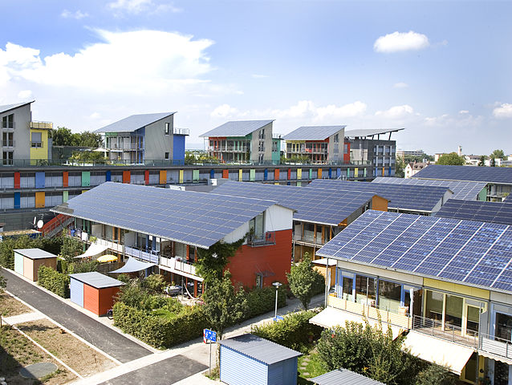

2.1. El efecto fotoeléctrico
Del Sol a los electrones
Algunos elementos químicos, como el silicio y el germanio son llamados semiconductores porque, dependiendo de algunas condiciones externas, conducen o no la electricidad.
Entre estas condiciones se encuentra la radiación luminosa procedente del Sol, que activa una corriente de electrones cuando incide sobre estos materiales.

Paneles fotovoltaicos en tejados de viviendas
Imagen de Andrewglaser en Wikimedia Commons. Licencia CC.
Este fenómeno natural se utiliza para producir energía eléctrica, con el Sol como única fuente, que es inagotable y por lo tanto una energía renovable. En el siguiente vídeo puedes ver una animación muy completa sobre el funcionamiento de la energía solar fotovoltaica:
Vídeo de costatropicalPTC en YouTube. Licencia CC.
Comprueba lo aprendido
Completa las siguientes afirmaciones que se hacen en el vídeo anterior, con la lista de palabras siguiente:
acumuladores, desfase, rurales, aisladas, semiconductores, fotovoltaico, fotones, remotas, red, alterna
Obra publicada con Licencia Creative Commons Reconocimiento Compartir igual 4.0